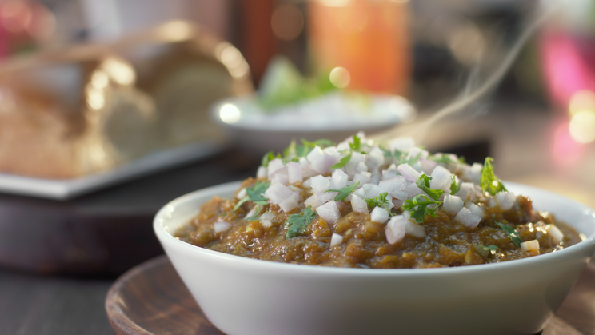

Pav Bhaji

Description
Pav Bhaji is a native Maharashtrian dish made with an assortment of mashed vegetables, pan-fried on a large tawa and served with Pav toasted in butter. It is immensely popular all across the country because of its spicy and tangy zest.
The generous dose of butter that is often used with freshly-cut onions and lemon juice tops the dish. Pav Bhaji is also a great way to feed fussy kids their share of veggies with a smile! You can also serve Pav Bhaji in a bruschetta/canapé style for your next party.
Ingredients
- 450 gms Mixed Vegetables (Potato, Cauliflower, Carrot, Beans, Capsicum)
- 2 Tablespoons Oil
- 2 Onions (Chopped)
- 1 Teaspoon Ginger-Garlic Paste
- 2 Tomato (Chopped)
- 50 gms Peas
- 2 Green Chillies(Chopped)
- 0.5 Teaspoon Turmeric Powder
- 1 Teaspoon Red Chilli Powder
- 2 Teaspoons Coriander Powder
- 1 Teaspoon Cumin Powder
- 1 Teaspoon Amchur Powder
- 2 Tablespoons Coriander Leaves(Chopped)
- 2 Tablespoons Lime Juice
- 1 Pinch Salt
Steps
- Prepare ingredients as mentioned in the list.
- Boil the mixed vegetables along with peas, in a pressure cooker with 1 cup of water, for one whistle. Keep aside.
- Heat oil in a pan, add chopped onions and fry till they turn golden brown. Add ginger garlic paste and fry for 5 minutes. Add tomatoes, green chillies, turmeric powder, chilli powder, coriander powder, cumin powder, and fry for a minute till all the masalas are well combined.
- Add the vegetables along with the water, salt and mix well. Mash the vegetables well with a spoon. Add the amchur powder and mix well.
- Add the remaining 1 cup water and simmer for 2 minutes to get a thick gravy. Remove from fire and add the lime juice and mix well.
- Garnish with coriander leaves and serve hot with Pav